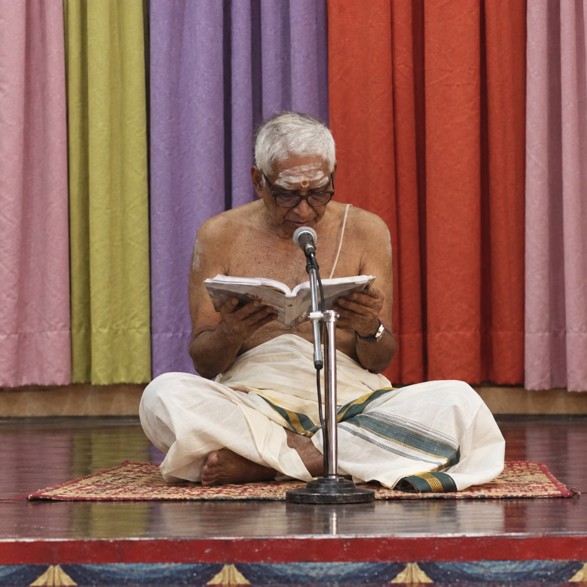

പാരായണം :
എ നാരായണ അയ്യർ
Recitation:
A Narayana Iyer
LISTEN · READ · LEARN
नारायणीयम्
Devanagari pilot · Dasakams 1–2
Read along in Devanagari with A Narayana Iyer’s recording. Switch to Malayalam at any time.
Using this player on your phone
Share this link: Open the Devanagari pilot
- Open this link in Safari on iPhone or Chrome on Android.
- iPhone: tap Share, then Add to Home Screen. Android: open the browser menu and choose Install app or Add to Home screen.
- Open the new home-screen icon, choose a Dasakam, then tap the dark red Save this chapter offline button directly below the selectors. To save everything, open Offline collection below the playback controls.
- Keep the app open until it says Saved offline. Test playback once in airplane mode.
Portrait view stacks the two texts for comfortable reading. Turn your phone sideways for two columns. If the phone clears saved website data, download the recordings again.
Offline collection · Save both chapters
Checking saved chapters…
Use Wi-Fi for the whole collection (about 12 MB). Already saved chapters are skipped. Downloads resume chapter by chapter if interrupted.
Loading the reading player…
The separated-word scan for this verse is unavailable. Original text and audio remain available.